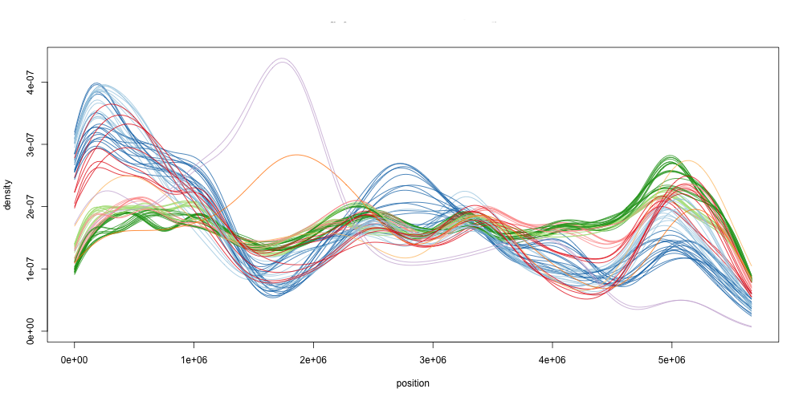
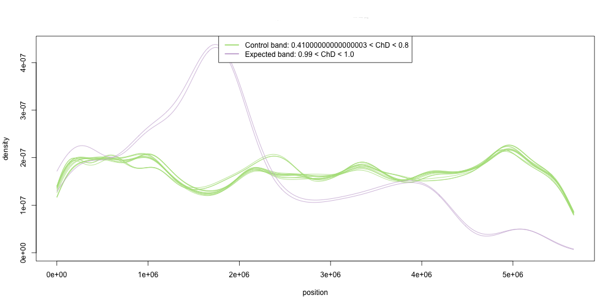
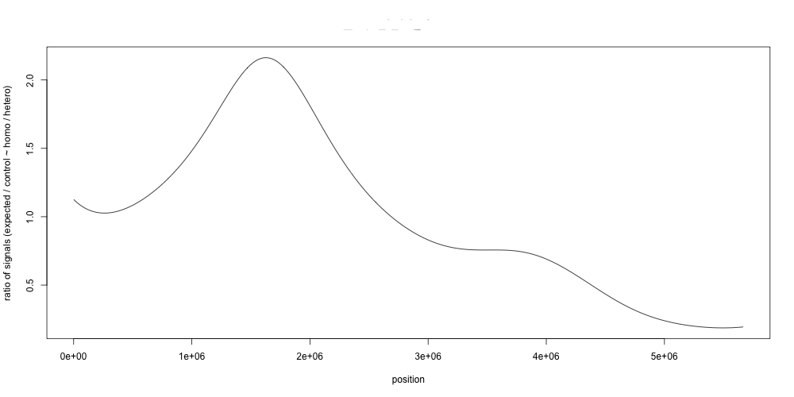

A Bio::Util::Gngm object represents a single region on a reference genome that is to be examined using the NGM technique described in Austin et al (2011) bar.utoronto.ca/ngm/description.html and onlinelibrary.wiley.com/doi/10.1111/j.1365-313X.2011.04619.x/abstract;jsessionid=F73E2DA628523B26205297CEE95526DA.d02t04 Austin et al (2011) Next-generation mapping of Arabidopsis genes Plant Journal 67(4):7125-725 .
Bio::Util::Gngm provides methods for finding SNPs, small INDELS and larger INDELS, creating histograms of polymorphism frequency, creating and clustering density curves, creating signal plots and finding peaks. The ratio of reference-agreeing and reference-differing reads can be specified.
The basic concept of the technique is that density curves of polymorphism frequency across the region of interest are plotted and analysed. Each curve is called a thread, as it represents a polymorphism that was called with a statistic within a certain user-specified range, eg if a SNP was called with 50% non-reference bases from sequence reads (say all A), and 50% reference reads (all T) then a discordant chastity statistic (ChD) of 0.5 would be calculated and assigned to that SNP. Depending on the width and slide of the windows the user had specified, the frequency of SNPs with ChD in the specified range would be drawn in the same density curve. In the figure below each different coloured curve represents the frequency of SNPs with similar ChD.

Each of these density curves is called a thread. Threads are clustered into groups called bands and the bands containing the expected and control polymorphisms extracted. In the figure below, the control band is 0.5, the expected mutation in 1.0. Typically and in the Austin et al (2011) description of NGM the control band is the heterophasic band that represents natural variation, the thing taken to be the baseline. For a simple SNP, numerically the discordant chastity is expected to be 0.5. Conversely the expected band is the homophasic band that represents the selected for SNP region. Normally the discordant chastity is expected to be 1.0.

The points where the signal from the control and expected band converge most is a likely candidate region for the causative mutation, so here at about the 1.6 millionth nucleotide.

require 'bio-gngm' g = Bio::Util::Gngm.new(:file => "aln.sorted.bam", :format => :bam, :fasta => "reference.fasta", :start => 100, :stop => 200, :write_pileup => "my_pileup_file.pileup", :write_vcf => "my_vcf_file.vcf", :ignore_file => "my_known_snps.txt" :samtools => { :q => 20, :Q => 50 }, :min_non_ref_freq => 0.5, :min_non_ref => 3, :start => 1, :stop => 100000, :chromosome => "Chr1", :variant_call => { :indels => false, :min_depth => 6, :max_depth => 250, :mapping_quality => 20.0, :min_non_ref_count => 2, :ignore_reference_n => true, :min_snp_quality => 20, :min_consensus_quality => 20, :substitutions => ["C:T","G:A"] } ) g.snp_positions g.collect_threads(:start => 0.2, :stop => 1.0, :slide => 0.01, :size => 0.1 ) [0.25, 0.5, 1.0].each do |kernel_adjust| # loop through different kernel values [4, 9, 11].each do | k | # loop through different cluster numbers #cluster g.calculate_clusters(:k => k, :adjust => kernel_adjust, :control_chd => 0.7, :expected_chd => 0.5) #draw thread and bands filename = "#{name}_#{k}_#{kernel_adjust}_all_threads.png" g.draw_threads(filename) filename = "#{name}_#{k}_#{kernel_adjust}_clustered_bands.png" g.draw_bands(filename, :add_lines => [100,30000,675432]) #draw signal filename = "#{name}_#{k}_#{kernel_adjust}_signal.png" g.draw_signal(filename) #auto-guess peaks filename = "#{name}_#{k}_#{kernel_adjust}_peaks.png" g.draw_peaks(filename) end end g.close #close BAM file
Bio::Util::Gngm will allow you to look for polymorphisms that are SNPs, INDELS (as insertions uniquely, deletions uniquely or both) and longer insertions or deletions based on the insert size on paired-end read alignments. Each has a different statistic attached to it.
Simple Single Nucleotide Polymorphisms are called and its ChD statistic calculated as described in Austin et al (2011).
These are called via SAMtools/BCFtools so are limited to the INDELs that can be called that way. The implementation at the moment only considers positions with one INDEL, sites with more than one potential INDEL (ie multiple alleles) are disregarded as a position at all. See the Bio::DB::Vcf extensions in this package for a description of what constitutes an INDEL. The Vcf attribute Bio::DB::Vcf#non_ref_allele_freq is used as the statistic in this case.
Paired-end alignments have an expected distance between the paired reads (called insert size, or isize). Groups of reads in one position with larger or smaller than expected isize can indicate large deletions or insertions. Due to the details of read preparation the actual isize varies around a mean value with an expected proportion of 50% of reads having isize above the mean, and 50% below. To create density curves of insertion size frequency a moves along the window of user-specified size is moved along the reference genome in user-specified steps and all alignments in that window are examined. The Bio::DB::Sam#isize attribute is inspected for all alignments passing user-specified quality and the proportion of reads in that window that have an insert size > the expected insert size is used as the statistic in this case. Proportions approaching 1 indicate that the sequenced organism has a deletion in that section relative to the reference. Proportions approaching 0 indicate an insertion in that section relative to the reference. Proportions around 0.5 indicate random variation of insert size, IE no INDEL. Seems to be a good idea to keep the window size similar to the read + isize. Useful in conjunction with assessing unmapped mates.
Paired-end alignments where one mate finds a mapping but the other doesnt, can indicate an insertion/deletion larger than the insert size of the reads used (IE one read disappeared into the deleted section). This method uses a statistic based on proportion of mapped/unmapped reads in a window. Proportions of reads that are mapped but the mate is unmapped should be about 0.5 in a window over an insertion/deletion (since the reads can go in either direction..). With no insertion deletion, the proportion should be closer to 0.
A sorted BAM file is used as the source of alignments. Pileup is not used nor likely to be as it is a deprecated function within SAMtools. With the BAM file you will need the reference FASTA and the BAM index (.bai).
Create Bio::Util::Gngm object for a specific region in the reference genome
Polymorphisms are found
Density curves (threads) are calculated
Clustering density threads into bands is done
Signal is compared between band of interest and control
Figures are printed
Ruby 1.9.3 or greater (if you have an earlier version, try RVM for installing different versions of Ruby alongside your system install and switching nicely between them)
R 2.11.1 or greater
The following ruby-gems are required
rinruby >= 2.0.2
bio-samtools >= 0.5.0
The following R packages are required
ggplot2
peaks
Thanks very much indeed to Ryan Austin, who invented NGM in the first place and was very forthcoming with R code, around which this implementation is based.
require 'bio-gngm'
Ruby 1.9.3 has a rounding error in the Range#step function such that some decimal places are rounded off to 0.00000000000000…1 above their place. So this constant is used to identify windows within a short distance and prevent any rounding errors. Hopefully I should be able to remove this in later versions.
Returns a new Bio::Util::Gngm object.
g = Bio::Util::Gngm.new(:file => "aln.sort.bam", :format => :bam, :samtools => {:q => 20, :Q => 50}, :fasta => "reference.fa" :start => 100, :stop => 200, :write_pileup => "my_pileup_file.pileup", :write_vcf => "my_vcf_file.vcf", :ignore_file => "my_known_snps.txt" )
Required parameters and defaults:
:file => nil -the path to the bam file containing the
alignments, a .bai index must be present. A pileup file, or tab-delimited
text file can be used.
:format => :bam -either :bam, :pileup, :txt (pileup
expected to be 10 col format from samtools -vcf)
:chromosome => "nil" -sequence id to look at
:start => nil -start position on that sequence
:stop => nil -stop position on that sequence
:fasta => nil -the path to the FASTA formatted reference
sequence
:write_pileup => false -the path to a file. SNPs will be
written in pileup to this file (indels not output)
:write_vcf => false -the path to a file. SNPs will be
written in VCF to this file (indels not output)
:ignore_file => false -file of SNPs in format “reference
sequence id t position t mapping line nucleotide identity t reference line
nucleotide identity”. All SNPs in this file will be ignored
:samtools => {:q => 20, :Q => 50} -options for
samtools, see bio-samtools documentation for further details.
Optional parameters and defaults:
Most of these are parameters for specific methods and can be over-ridden when particular methods are called
:variant_call => {:indels => false,
:min_depth => 2,
:max_depth => 10000000,
:min_snp_quality => 20,
:mapping_quality => 10.0,
:min_non_ref_count => 2,
:ignore_reference_n => true,
:min_consensus_quality => 20,
:min_snp_quality => 20 }.
For Pileup files from old samtools pileup -vcf
<tt>:min_consensus_quality can be applied
:threads => {:start => 0.2, :stop => 1.0, :slide => 0.01,
:size => 0.1 } -options for thread windows
:insert_size_opts => {:ref_window_size => 200,
:ref_window_slide => 50, :isize => 150} -options for insert
size calculations
:histo_bin_width => 250000 -bin width for histograms of SNP
frequency
:graphics => {:width => 1000, :height => 500, :draw_legend
=> false, :add_boxes => nil} -graphics output options,
:draw_legend draws a legend plot for band figures only
:peaks => {:sigma => 3.0, :threshold => 10.0, :background
=> false, :iterations => 13, :markov => false, :window => 3,
:range => 10000} -parameters for automated peak calling,
parameters relate to R package Peaks. :range is the width of
the box to draw on the peak plot
# File lib/bio/util/bio-gngm.rb, line 393 def initialize(options) @file = nil @snp_positions = nil @threads = nil @densities = nil @clusters = nil @control_band = nil @expected_band = nil @signal = nil @peak_indices = nil @peak_y_values = nil @density_max_y = nil #the maximum y value needed to plot the entire set density plots of threads and maintain a consistent scale for plots @colours = %w[#A6CEE3 #1F78B4 #B2DF8A #33A02C #FB9A99 #E31A1C #FDBF6F #FF7F00 #CAB2D6 #6A3D9A #FFFF99 #B15928] @thread_colours = {} @known_variants = nil #a list of variants to keep track of @opts = { :file => nil, :format => :bam, :fasta => nil, :samtools => {:q => 20, :Q => 50}, :indels => false, :write_pileup => false, :write_vcf => false, :ignore_file => false, :insert_size_opts => {:ref_window_size => 200, :ref_window_slide => 50, :isize => 150}, :variant_call => { :indels => false, :min_depth => 2, :max_depth => 10000000, :mapping_quality => 10.0, :min_non_ref_count => 2, :ignore_reference_n => true, :shore_map => false, :snp_file => :false, :min_consensus_quality => 20, :min_snp_quality => 20}, ## some options are designed to be equivalent to vcfutils.pl from bvftools options when using vcf ##:min_depth (-d) ##:max_depth (-D) ##:mapping_quality (-Q) minimum RMS mappinq quality for SNPs (mq in info fields) ##:min_non_ref_count (-a) minimum num of alt bases ... the sum of the last two numbers in DP4 in info fields ##doesnt do anything with window filtering or pv values... :histo_bin_width => 250000, :graphics => {:width => 1000, :height => 500, :draw_legend => false, :add_boxes => nil}, :adjust => 1, :control_chd => 0.5, :expected_chd => 1.0, :threads => {:start => 0.2, :stop => 1.0, :slide => 0.01, :size => 0.1 }, :peaks => {:sigma => 3.0, :threshold => 10.0, :background => false, :iterations => 13, :markov => false, :window => 3, :range => 10000} ##range is the width of the box to draw on the peak plot } @opts.merge!(options) @opts[:samtools][:r] = "#{options[:chromosome]}:#{options[:start]}-#{options[:stop]}" @pileup_outfile, @vcf_outfile = nil,nil if @opts[:variant_call][:indels] and (@opts[:write_pileup] or @opts[:write_vcf]) $stderr.puts "Cannot yet output VCF/Pileup when generating INDELs. Turning output off." @opts[:write_pileup] = false @opts[:write_vcf] = false end if @opts[:write_pileup] @pileup_outfile = File.open(opts[:write_pileup], "w") end if @opts[:write_vcf] @vcf_outfile = File.open(opts[:write_vcf], "w") end @known_snps = Hash.new if @opts[:ignore_file] File.open(@opts[:ignore_file], "r").each do |line| cols = line.split(%r\t/) if @known_snps[col[0]] @known_snps[col[0]][col[1]] = 1 else @known_snps[col[0]] = Hash.new @known_snps[col[0]][col[1]] = 1 end end end open_file end
Calculates the k-means clusters of density curves (groups threads into bands), [density curve y values] ]</tt> Calculates the clusters using the R function +kmeans()+ Recalculates @densities as it does with #calculate_densities, so clustering can be done without having to explicitly call #calculate_densities. Clusters are recalulated every time regardless of whether its been done before contains anything or not so is useful for trying out different values for the parameters. When clusters are calculated the expected and control bands are compared with the #calculate_signal method and the @signal array populated. Resets the instance variables @control_band, @expected_band, @signal, @peak_indices, @peak_y_values and @clusters
Options and defaults
:k => 9, -the number of clusters for the R
kmeans function
:seed => false -set this to a number to make the randomized
clustering reproducible
:control_chd => 0.5 -the value of the control thread/window
:expected_chd => 1.0 -the value of the expected
thread/window
:adjust => 1.0 -the kernel adjustment parameter for the R
density function
:pseudo => false - force the densities into a single thread
cluster when the number of distinct threads with SNPs is < the value of
k. This is only useful in a situation where the spread of the statistic is
very limited. EG for using mapped/unmapped mate pairs then almost all
windows will have proportion 1.0 but a tiny number will be close to 0.5
with few other values considered.
# File lib/bio/util/bio-gngm.rb, line 916 def calculate_clusters( opts={} ) options = {:k => 9, :seed => false, :adjust => 1, :control_chd => 0.5, :expected_chd => 1.0, :pseudo => false} options = options.merge(opts) if options[:pseudo] put_threads_into_individual_clusters(options) return end r = new_r names = [] name = "a" @control_band = nil #needs resetting as we are working with new clusters @expected_band = nil #needs resetting as we are working with new clusters @signal = nil #needs resetting as we are working with new clusters @peak_indices = nil #needs resetting as we are working with new cluster @peak_y_values = nil #needs resetting as we are working with new cluster self.calculate_densities(options[:adjust]).each do |d| density_array = d.last r.assign name, density_array ##although windows go in in numeric order, r wont allow numbers as names in data frames so we need a proxy names << "#{name}=#{name}" name = name.next end data_frame_command = "data = data.frame(" + names.join(",") + ")" r.eval data_frame_command r.eval "set.seed(#{options[:seed]})" if options[:seed] r.eval "k = kmeans(cor(data),#{options[:k]},nstart=1000)" @clusters = r.pull "k$cluster" ##clusters are returned in the order in densities r.quit ##now set the cluster colours.. colours = %w[#A6CEE3 #1F78B4 #B2DF8A #33A02C #FB9A99 #E31A1C #FDBF6F #FF7F00 #CAB2D6 #6A3D9A #FFFF99 #B15928] ci = 0 col_nums = {} ##hash of cluster numbers and colours @clusters.each_index do |i| if not col_nums[@clusters[i]] col_nums[@clusters[i]] = colours[ci] ci += 1 ci = 0 if ci > 11 end @thread_colours[self.densities[i].first] = col_nums[@clusters[i]] end @control_band = get_band(options[:control_chd]) @expected_band = get_band(options[:expected_chd]) calculate_signal end
Sets and returns the array of arrays [window, [density curve x
values], [density curve y values] ] Calculates the density curve
using the R function +density()+ Always sets @densities regardless of
whether it contains anything or not so is useful for trying out adjustment
values. Ignores threads with fewer than 2 polymorphisms since density
can’t be computed with so few polymorphisms.
Options and defaults
adjust = 1, -the kernel adjustment parameter for the R
density function
# File lib/bio/util/bio-gngm.rb, line 831 def calculate_densities(adjust=1) r = new_r densities = [] self.threads.each do |t| next if t.last.length < 2 ##length of density array is smaller or == threads, since too small windows are ignored... r.curr_win = t.last r.eval "d = density(curr_win,n=240,kernel=\"gaussian\", from=#{@snp_positions.first[0]}, to=#{@snp_positions.last[0]}, adjust=#{adjust})" densities << [t.first, r.pull("d$x"), r.pull("d$y")] end r.quit @densities = densities calculate_density_max_y ##need to re-do every time we get new densities densities end
Returns an array of values representing the ratio of average of the expected threads/windows to the control threads/windows. Sets @signal, the signal curve.
# File lib/bio/util/bio-gngm.rb, line 1121 def calculate_signal r = new_r name = "a" control_names = [] expected_names = [] self.densities.each do |d| if @control_band.include?(d.first) density_array = d.last r.assign name, density_array ##although windows go in in numeric order, r wont allow numbers as names in data frames so we need a proxy control_names << "#{name}=#{name}" elsif @expected_band.include?(d.first) density_array = d.last r.assign name, density_array expected_names << "#{name}=#{name}" end name = name.next end data_frame_command = "control = data.frame(" + control_names.join(",") + ")" r.eval data_frame_command r.eval "control_mean = apply(control, 1, function(ecks) mean((as.numeric(ecks))) )" data_frame_command = "expected = data.frame(" + expected_names.join(",") + ")" r.eval data_frame_command r.eval "expected_mean = apply(expected, 1, function(ecks) mean((as.numeric(ecks))) )" r.eval "signal = expected_mean / control_mean" signal = r.pull "signal" r.quit @signal = signal end
for BAM files calls Bio::DB::Sam#close to close the connections to input files safely
# File lib/bio/util/bio-gngm.rb, line 494 def close case @opts[:format] when :bam then @file.close end end
Returns the array instance variable @clusters. The R function +kmeans()+ is used to calculate the clusters based on a correlation matrix of the density curves. If @clusters is nil when called this method will run the #calculate_clusters method and set @clusters With this method you cannot recalculate the clusters after they have been done once.
Options and defaults
:k => 9, -the number of clusters for the R
kmeans function
:seed => false -set this to a number to make the randomized
clustering reproducible
:control_chd => 0.5 -the value of the control thread/window
:expected_chd => 1.0 -the value of the expected
thread/window
:adjust => 1.0 -the kernel adjustment parameter for the R
density function
# File lib/bio/util/bio-gngm.rb, line 900 def clusters(opts={}) @clusters ||= calculate_clusters(opts={}) end
Resets contents of instance variable @threads and returns an array of
arrays [[window 1, snp position 1, snp position 2 ... snp position
n],[window 2, snp position 1, snp position 2 ... snp position n] ].
Always sets @threads regardless of whether it contains anything or not so
is useful for trying out different window sizes etc
Options and defaults:
:start => 0.2 -first window
:stop => 1.0 -last window
:slide => 0.01 -distance between windows
:size => 0.1 -window width
# File lib/bio/util/bio-gngm.rb, line 748 def collect_threads(options={}) opts = @opts[:threads].merge(options) opts[:slide] = 0.000001 if opts[:slide] < 0.000001 ##to allow for the rounding error in the step function... raise RuntimeError, "snp positions have not been calculated yet" if not @snp_positions start,stop,slide,size = opts[:start].to_f, opts[:stop].to_f, opts[:slide].to_f, opts[:size].to_f arr = [] (start..stop).step(slide) do |win| arr << [win, @snp_positions.select {|x| x.last >= win and x.last < win + size }.collect {|y| y.first} ] end @threads = arr end
Returns the instance variable @densities array of arrays [window,
[density curve x values], [density curve y values] ]. The R function
+density()+ is used to calculate the values. If @densities is nil when
called this method will run the #calculate_densities
method and set @densities With this method you cannot recalculate the
densities after they have been done once.
Options and defaults
adjust = 1, -the kernel adjustment parameter for the R
density function
# File lib/bio/util/bio-gngm.rb, line 821 def densities(adjust=1) @densities ||= calculate_densities(adjust) end
Draws the clustered bands that correspond to the expected and control
window in a single PNG file file
Options and defaults
:add_lines => nil -if an array of positions is provided eg
+[100,345] , vertical lines will be drawn at these positions. Useful for
indicating feature positions on the plot
:width => 1000 -width of the PNG in pixels
:height => 500 -height of the PNG in pixels
# File lib/bio/util/bio-gngm.rb, line 854 def draw_bands(file="myfile.png", optsa={}) opts = @opts[:graphics].merge(optsa) pp optsa raise RuntimeError, "Can't draw threads until clustering is done" unless @clusters #uses R's standard plot functions. ##same as draw_threads, but skips threads that aren't on the bands lists ## r = new_r r.eval "png('#{file}', width=#{opts[:width]}, height=#{opts[:height]})" plot_open = false self.densities.each do |t| if @control_band.include?(t[0]) or @expected_band.include?(t[0]) r.dx = t[1] r.dy = t[2] r.curr_win = t.last #r.eval "d = density(curr_win,n=240,kernel=\"gaussian\", from=#{@snp_positions.first[0]}, to=#{@snp_positions.last[0]})" if plot_open r.eval "lines(dx, dy, col=\"#{@thread_colours[t.first]}\")" else r.eval "plot(dx, dy, type=\"l\", col=\"#{@thread_colours[t.first]}\",ylim=c(0,#{density_max_y}), main='#{file}',xlab='position', ylab='density')" plot_open = true end end end label1 = "Control band: " + @control_band.min.to_s + " < ChD < " + @control_band.max.to_s label2 = "Expected band: " + @expected_band.min.to_s + " < ChD < " + @expected_band.max.to_s r.eval "legend('top', c('#{label1}','#{label2}'), lty=c(1,1),lwd=c(2.5,2.5),col=c('#{@thread_colours[@control_band.first]}','#{@thread_colours[@expected_band.first]}'))" if opts[:add_lines] and opts[:add_lines].instance_of?(Array) opts[:add_lines].each do |pos| r.eval "abline(v=#{pos})" end end r.eval "dev.off()" r.quit end
Draws a barplot of the number of polymorphisms in each thread/window in a
single PNG file file
# File lib/bio/util/bio-gngm.rb, line 1100 def draw_hit_count(file="myfile.png",opts=@opts[:graphics]) r = new_r wins = [] hits = [] self.threads.each do |thread| wins << thread.first if thread.last.empty? hits << 0.01 ##pseudovalue gets around the case where a thread has no hits... which messes up barplot in R else hits << thread.last.length end end r.wins = wins r.hits = hits r.eval "png('#{file}', width=#{opts[:width]}, height=#{opts[:height]})" r.eval "barplot(hits, names.arg=c(wins), xlab='window', log='y', ylab='number of hits', main='Number of Polymorphisms #{file}', col=rgb(r=0,g=1,b=1, alpha=0.3), na.rm = TRUE)" r.eval "dev.off()" end
Draws the peaks calculated from the signal curve by the R function
Peaks in Bio::Util::Gngm#calculate_peaks. Adds boxes of width
:range to each peak and annotates the limits. Options are set
in the global options hash :peaks. and relate to the Peaks
function in R
# File lib/bio/util/bio-gngm.rb, line 1043 def draw_peaks(file="myfile.png",opts=@opts[:graphics]) opts_a = @opts[:peaks] opts_a.merge!(opts) opts = opts_a ##sigh ... #opts[:background] = opts[:background].to_s.upcase #opts[:markov] = opts[:markov].to_s.upcase self.get_peaks(opts) r = new_r #r.eval "suppressMessages ( library('Peaks') )" r.signal = self.signal r.x_vals = self.densities[0][1] r.eval "png('#{file}', width=#{opts[:width]}, height=#{opts[:height]})" #r.eval "spec = SpectrumSearch(signal,#{opts[:sigma]},threshold=#{opts[:threshold]},background=#{opts[:background]},iterations=#{opts[:iterations]},markov=#{opts[:markov]},window=#{opts[:window]})" #peak_positions = r.pull "spec$pos" #y = r.pull "spec$y" r.y = @peak_y_values r.pos = @peak_indices r.eval "plot(x_vals,y, type=\"l\", xlab='position', ylab='Peaks', main='#{file}' )" @peak_indices.each do |peak| r.eval "rect(x_vals[#{peak}]-(#{opts[:range]/2}), 0, x_vals[#{peak}]+#{opts[:range]/2}, max(y), col=rgb(r=0,g=1,b=0, alpha=0.3) )" r.eval "text(x_vals[#{peak}]-(#{opts[:range]/2}),max(y) + 0.05, floor(x_vals[#{peak}]-(#{opts[:range]/2})) )" r.eval "text(x_vals[#{peak}]+(#{opts[:range]/2}), max(y) + 0.05, floor(x_vals[#{peak}]+(#{opts[:range]/2})) )" end r.eval "dev.off()" r.quit end
Draws the contents of the @signal instance variable in a single PNG file
file
# File lib/bio/util/bio-gngm.rb, line 1020 def draw_signal(file="myfile.png", opts=@opts[:graphics]) #data.frame(bubs=data$bubbles_found,conf=data$bubbles_confirmed) r = new_r x_vals = self.densities[0][1] r.eval "png('#{file}', width=#{opts[:width]}, height=#{opts[:height]})" r.x_vals = x_vals r.signal = self.signal r.eval "plot(x_vals,signal, type=\"l\", xlab='position', ylab='ratio of signals (expected / control ~ homo / hetero)', main='#{file}' )" r.eval "dev.off()" end
Draws the threads in a single PNG file file
Options and defaults
:draw_legend => nil -if a filename is provided a legend
will be drawn in a second plot
:width => 1000 -width of the PNG in pixels
:height => 500 -height of the PNG in pixels
# File lib/bio/util/bio-gngm.rb, line 784 def draw_threads(file="myfile.png", options={}) opts = @opts[:graphics].merge(options) #uses R's standard plot functions.. needed because ggplot can die unexpectedly... raise RuntimeError, "Can't draw threads until clustering is done" unless @clusters r = new_r r.eval "png('#{file}', width=#{opts[:width]}, height=#{opts[:height]})" plot_open = false self.densities.each do |t| r.curr_win = t.last r.dx = t[1] r.dy = t[2] if plot_open r.eval "lines(dx,dy, col=\"#{@thread_colours[t.first]}\", xlab='position', ylab='density')" else r.eval "plot(dx,dy, type=\"l\", col=\"#{@thread_colours[t.first]}\",ylim=c(0,#{density_max_y}), main='#{file}',xlab='position', ylab='density')" plot_open = true end end r.eval "dev.off()" if opts[:draw_legend] r.eval "png('#{opts[:draw_legend]}', width=#{opts[:width]}, height=#{opts[:height]})" colours = @thread_colours.each.sort.collect {|x| x.last}.join("','") names = @thread_colours.each.sort.collect {|x| x.first}.join("','") r.eval "plot(1,xlab="",ylab="",axes=FALSE)" r.eval "legend('top', c('#{names}'), lty=c(1),lwd=c(1),col=c('#{colours}'), ncol=4)" r.eval "dev.off()" end r.quit end
Draws a histogram of polymorphism frequencies across the reference genome
section defined in Bio::Util::Gngm#initialize with bin width
bin_width and writes it to a PNG file file
# File lib/bio/util/bio-gngm.rb, line 713 def frequency_histogram(file="myfile.png", bin_width=@opts[:histo_bin_width], opts=@opts[:graphics]) posns = self.snp_positions.collect {|a| a.first} r = new_r r.eval "suppressMessages ( library(ggplot2) )" #setup R environment... r.posns = posns r.eval "data = data.frame(position=posns)" r.eval "png('#{file}', width=#{opts[:width]}, height=#{opts[:height]})" graph_cmd = "qplot(position,data=data, geom='histogram', binwidth = #{bin_width}, alpha=I(1/3), main='#{file}', color='red')" r.eval(graph_cmd) r.eval "dev.off()" r.quit end
gets an array of windows that cluster with a given window
# File lib/bio/util/bio-gngm.rb, line 1000 def get_band(window=1.0) ##because of the weird step rounding error we need to find the internal name of the window.. so find it from the list from the name the user ##expects it to be, may give more than one passing window so keep only first one.. windows = find_window(window) raise RuntimeError, "Couldnt find window #{window}, or window has no data to calculate: \n windows are #{self.densities.collect {|d| d.first} }" if windows.empty? ##if we have a window that is close enough to the specified window idx = find_index(windows.first) #find out which cluster the window is in cluster = self.clusters[idx] ##get the other windows in the same cluster, ie the band... band = [] self.clusters.each_index do |i| if self.clusters[i] == cluster band << self.densities[i].first end end band end
Returns array of arrays [[window start position, proportion of
alignments > insert size]]. Does this by taking successive
windows across reference and collects the proportion of the reads in that
window that have an insert size > the expected insert size. Proportions
approaching 1 indicate that the sequenced organism has a deletion in that
section, proportions approaching 0 indicate an insertion in that section,
proportions around 0.5 indicate random variation of insert size, IE no
indel.
Each section should be approximately the size of the insertion you expect to find and should increment in as small steps as possible.
Options and defaults:
:ref_window_size => 200 width of window in which to
calculate proportions
:ref_window_slide => 50 number of bases to move window in
each step
:isize => 150 expected insert size
Sets the instance variable @snp_positions. Only gets positions the first time it is called, in subsequent calls pre-computed positions and statistics are returned, so changing parameters has no effect
# File lib/bio/util/bio-gngm.rb, line 682 def get_insert_size_frequency(options={}) opts = @opts[:insert_size_opts].merge(options) return @snp_positions if @snp_positions case when @file.instance_of?(Bio::DB::Sam) then get_insert_size_frequency_from_bam(opts) end end
private Calculates the position of peaks in the signal curve
# File lib/bio/util/bio-gngm.rb, line 1072 def get_peaks(opts=@opts[:peaks]) opts[:background] = opts[:background].to_s.upcase opts[:markov] = opts[:markov].to_s.upcase r = new_r r.eval "suppressMessages ( library('Peaks') )" r.signal = self.signal r.x_vals = self.densities[0][1] r.eval "spec = SpectrumSearch(signal,#{opts[:sigma]},threshold=#{opts[:threshold]},background=#{opts[:background]},iterations=#{opts[:iterations]},markov=#{opts[:markov]},window=#{opts[:window]})" @peak_indices = r.pull "spec$pos" if @peak_indices.instance_of?(Fixnum) @peak_indices = [@peak_indices] end @peak_y_values = r.pull "spec$y" r.quit end
Returns array of arrays [[window start position, proportion of reads
with unmapped mates]]. Does this by taking successive windows across
reference and counting the reads with unmapped mates Proportions
approaching 0.5 indicate that the sequenced organism has an insertion in
that section, proportions approaching 0 indicate nothing different in that
section.
Each section should be approximately the size of the insertion you expect to find and should increment in as small steps as possible.
Options and defaults:
:ref_window_size => 200 width of window in which to
calculate proportions
:ref_window_slide => 50 number of bases to move window in
each step
Sets the instance variable @snp_positions. Only gets positions the first time it is called, in subsequent calls pre-computed positions and statistics are returned, so changing parameters has no effect
# File lib/bio/util/bio-gngm.rb, line 701 def get_unmapped_mate_frequency(options={}) opts = @opts[:insert_size_opts].merge(options) return @snp_positions if @snp_positions case when @file.instance_of?(Bio::DB::Sam) then get_unmapped_mate_frequency_from_bam(opts) end end
Returns an array of polymorphisms in each thread/window <tt>[[window, polymorphism count] ]. Useful for sparse polymorphism counts or over small regions where small polymorphism counts can cause artificially large peaks in density curves.
# File lib/bio/util/bio-gngm.rb, line 1090 def hit_count arr = [] self.threads.each do |thread| arr << [thread.first, thread.last.length] end arr end
# File lib/bio/util/bio-gngm.rb, line 531 def is_allowed_substitution?(ref,alt,opts) if opts[:substitutions].instance_of?(Array) return false unless opts[:substitutions].include?("#{ref}:#{alt}") end true end
Deletes everything from self.snp_positions not mentioned by position in self.known_variants. Directly modifies self.snp_positions
# File lib/bio/util/bio-gngm.rb, line 1190 def keep_known_variants(file=nil) raise "file of known variants not provided and @known_variants is nil" if @known_variants.nil? and file.nil? @known_variants = parse_known_variants(file) if @known_variants.nil? and file @snp_positions.each do |snp| end end
Returns the positions of the peaks in the signal curve calculated by #get_peaks as an array
# File lib/bio/util/bio-gngm.rb, line 1036 def peaks @peak_indices.collect {|x| self.densities[0][1][x].to_f.floor} end
# File lib/bio/util/bio-gngm.rb, line 1151 def signal @signal ||= calculate_signal end
Returns array of arrays [[position, statistic]] for
polymorphisms passing filters in optsa Default options are
those in the :variant_call global options hash which can be
over ridden in the method call
Options and defaults:
:indels => false -call small insertions AND deletions
instead of simple SNPs
:deletions_only => false -call just deletions instead of
simple SNPs
:insertions_only => false -call small insertions instead of
simple SNPs
:min_depth => 2 -minimum quality passing depth of coverage
at a position for a SNP call
:max_depth => 10000000 -maximum quality passing depth of
coverage at a position for a SNP call
:mapping_quality => 10.0 -minimum mapping quality required
for a read to be used in depth calculation
:min_non_ref_count => 2 -minimum number of reads not
matching the reference for SNP to be called
:ignore_reference_n => true -ignore positions where the
reference is N or n
When INDEL calling only one of :indels should be used. If
false, SNPs are called.
calculates or returns the value of the instance variable @snp_positions. Only gets positions the first time it is called, in subsequent calls pre-computed positions and statistics are returned, so changing parameters has no effect.
# File lib/bio/util/bio-gngm.rb, line 516 def snp_positions(optsa={}) opts = @opts[:variant_call].merge(optsa) return @snp_positions if @snp_positions case @opts[:format] when :bam then get_snp_positions_from_bam(opts) when :text then get_snp_positions_from_text(opts) when :pileup then get_snp_positions_from_pileup(opts) end end
allows the user to assign SNP positions
# File lib/bio/util/bio-gngm.rb, line 527 def snp_positions=(arr) @snp_positions = arr end
Returns contents of @threads, an array of arrays [[window 1, snp
position 1, snp position 2 ... snp position n],[window 2, snp position 1,
snp position 2 ... snp position n] ]. If @threads is nil (because
snps have not yet been gathered into threads) the #collect_threads method is
called and @threads is set before returning
Options and defaults:
:start => 0.2 -first window
:stop => 1.0 -last window
:slide => 0.01 -distance between windows
:size => 0.1 -window width
# File lib/bio/util/bio-gngm.rb, line 735 def threads(opts=@opts[:threads]) @threads ||= collect_threads(opts) end